01: Le fil réel
0 à 3,75 s
Le fil de la Communauté défile : de vrais posts de voyageurs (photo, lieu, carnet en route, réactions). La phrase d'accueil se pose par-dessus.
À lire « Là où la carte » (0,3-1,6 s) ; « se termine. » (1,6-3,5 s)
Son piste calme ; léger tic de défilement
Source style des posts : `docs/audit/communaute-v2-2026-11-08/**` ; personnes fictives

02: Le post de Maya réel
3,75 à 5,62 s
Le pouce de Léa s'arrête sur le post de Maya (Torres del Paine, lever du soleil) et tape dessus.
À lire le post (0,2-1,2 s) ; le tap (1,4 s)
Son tap
Source post communauté ; personnes fictives

03: Le carnet de Maya partiel
5,62 à 7,5 s
Le post ouvre le carnet de Maya : jours, trace, chiffres, kit. Léa touche « Refaire ce voyage ».
À lire le carnet (0,2-1,0 s) ; « Refaire ce voyage » (1,0-1,8 s)
Son whoosh doux
Source carnet réel 📷 ; passage carnet → Compas : `prepareActivityFromTrail.ts` (partiel, libellé à confirmer)

04: « On le fait ? » capture à faire
7,5 à 9,38 s
Léa partage le carnet dans la messagerie du groupe ; Noé et Sam répondent.
À lire les trois bulles, une par temps (0,2-1,8 s)
Son trois petits sons de message
Source `/messagerie` ; ❌ capture à faire

05: La phrase réel
9,38 à 11,25 s
Le Compas s'ouvre déjà rempli : « 5 jours sur le W de Torres del Paine, à 3, en refuge, fin novembre ». Clic « Préparer mon aventure » sur le dernier temps.
À lire la phrase (0,2-1,4 s) ; le bouton (1,4-1,8 s)
Son frappe ; clic ; la piste s'ouvre au clic
Source Compas « Où » 📷 (texte de la phrase à changer)
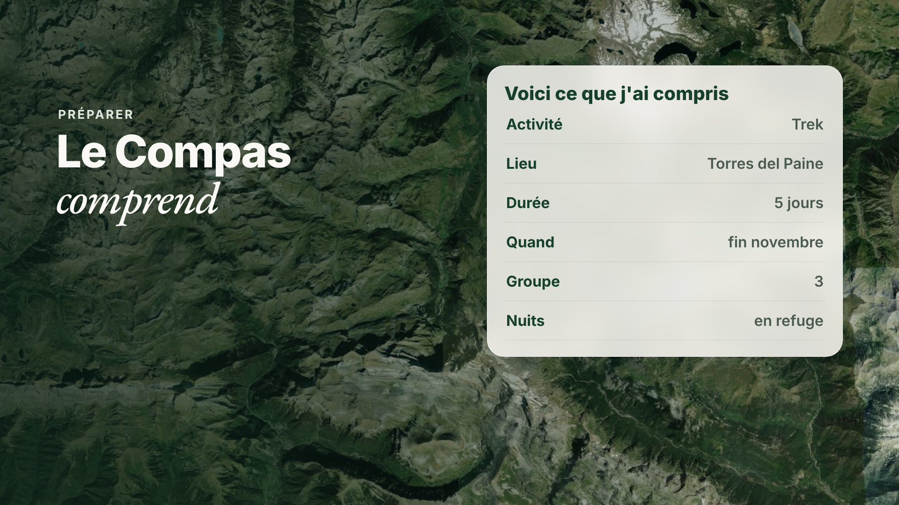
06: Le Compas comprend capture à faire
11,25 à 13,12 s
La phrase se range en lignes pendant que le globe plonge sur la Patagonie.
À lire six lignes (0,1-1,8 s)
Son pop par ligne
Source libellés `compas-steps.fr.ts` ; carte à recuire sur la Patagonie
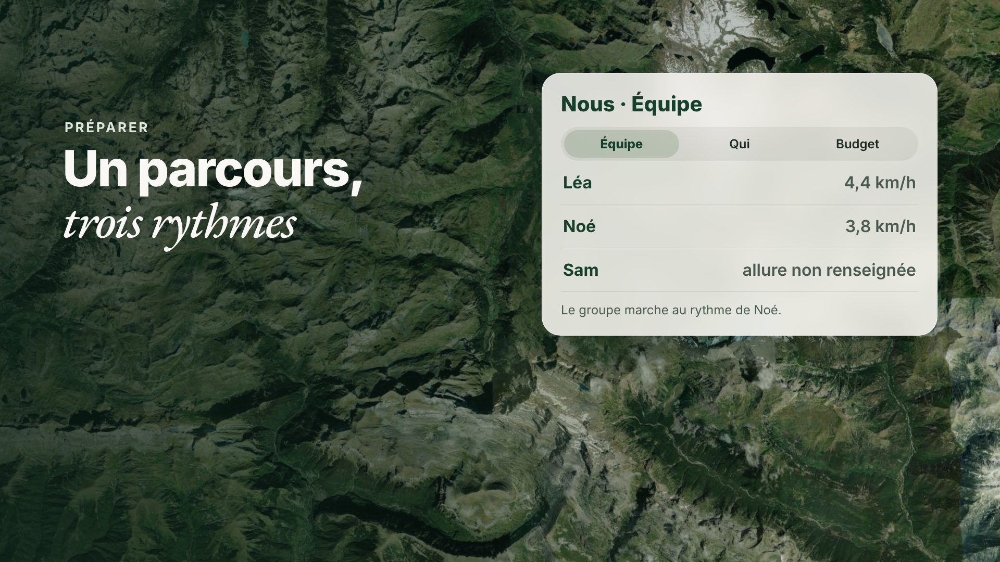
07: Le W capture à faire
13,12 à 15 s
Le W se trace entre les refuges ; le panneau « Nous » cale le groupe sur le plus lent ; « Qui doit quoi » partage le budget.
À lire le tracé (0,2-1,0 s) ; « au rythme de Noé » (1,0-1,8 s)
Son pops des étapes
Source Compas « Nous » 📷 (jeu de démo) ; valeurs fictives
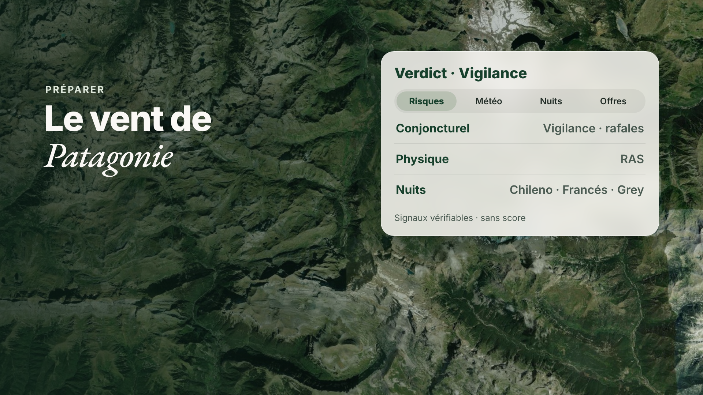
08: Le vent capture à faire
15 à 16,88 s
Verdict : vigilance sur le vent (MET Norway) ; les nuits en refuge et les réservations se rangent.
À lire « Vigilance · rafales » (0,2-1,2 s) ; « sans score » (1,2-1,8 s)
Son souffle de vent
Source libellés `compas-screen.fr.ts` ; ❌ capture à faire ; météo illustrative
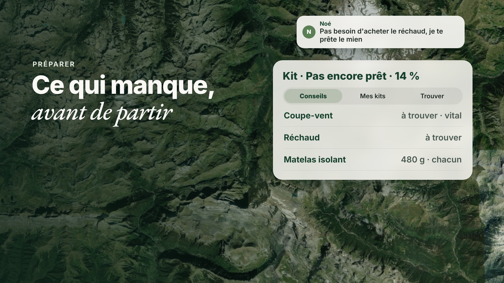
09: Ce qui manque réel
16,88 à 18,75 s
Kit : « Pas encore prêt » ; coupe-vent et réchaud à trouver. Un message de Noé glisse en haut.
À lire « à trouver » (0,2-0,9 s) ; message de Noé (0,9-1,8 s)
Son son de message
Source Compas « Kit » 📷 ; message fictif
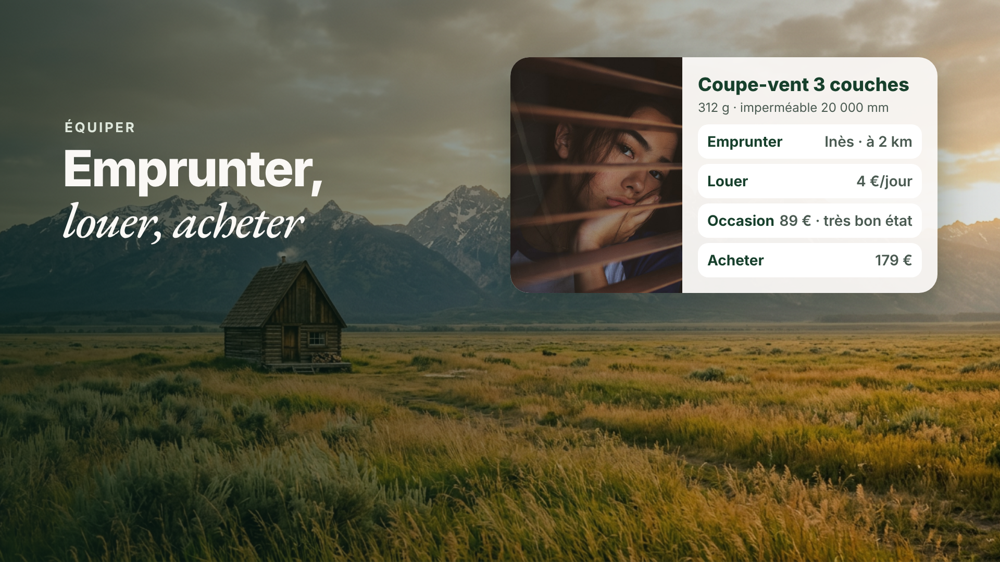
10: La boutique partiel
18,75 à 20,62 s
Fiche produit complète : poids, usage, avis ; quatre façons de l'avoir, du prêt entre voisins à l'achat.
À lire le produit (0,2-0,8 s) ; les quatre offres (0,8-1,8 s)
Son clic
Source « Emprunter · Louer · Acheter », occasion (`/api/produit/occasion-check`) ; page boutique non routée aujourd'hui (partiel) ; prix fictifs
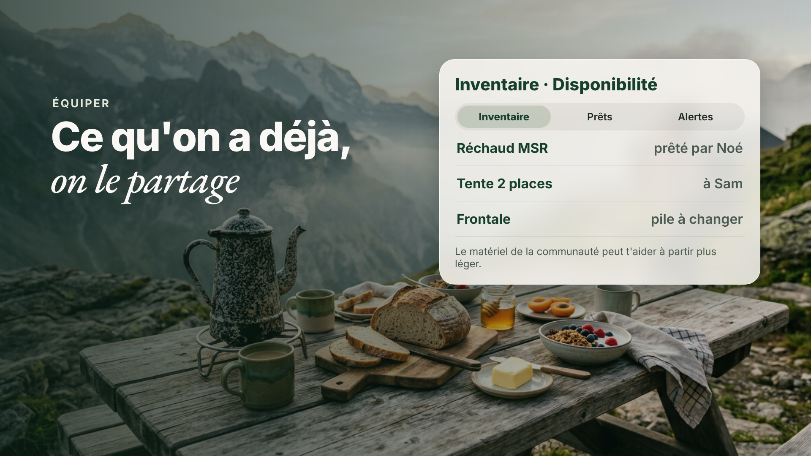
11: Les prêts du groupe capture à faire
20,62 à 22,5 s
Inventaire du groupe : prêts, emprunts, alertes d'entretien.
À lire « prêté par Noé » (0,2-1,8 s)
Son pop
Source hub possession, « Prêté », « Emprunté » ; ❌ capture à faire
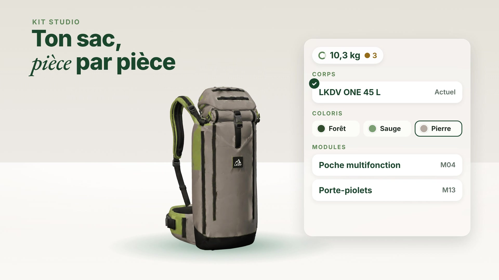
12: Kit Studio réel
22,5 à 26,25 s
TEMPS FORT : Léa monte son sac en 3D — corps 45 L, coloris, poche multifonction, porte-piolets ; le poids se met à jour.
À lire « Ton sac, pièce par pièce » (0,4-1,6 s) ; coloris et modules (1,8-3,6 s)
Son whoosh ; clics des modules
Source vrais maillages `.glb` du Kit Studio 📷
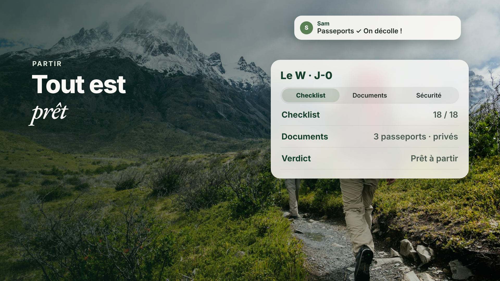
13: Le départ capture à faire
26,25 à 28,12 s
Hub du voyage : tout est coché, documents privés, verdict « Prêt à partir ».
À lire « Prêt à partir » (0,6-1,8 s)
Son son de message
Source hub sortie (`hubSectionRegistry.ts`) ; ❌ capture à faire
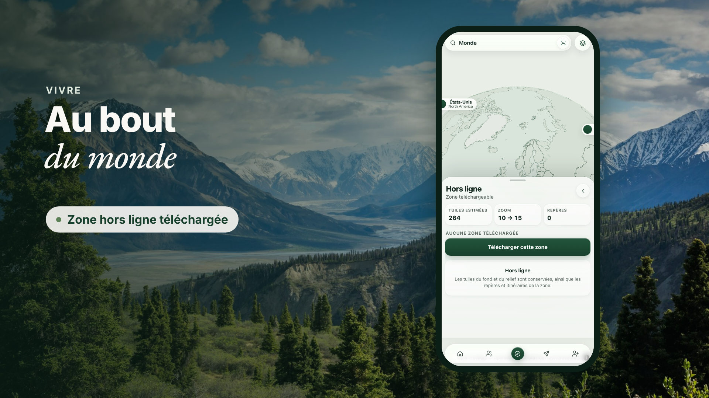
14: Hors ligne réel
28,12 à 30 s
Le globe pivote vers le sud ; la zone du W est déjà téléchargée, le réseau peut disparaître.
À lire « Au bout du monde » (0,2-1,0 s) ; « hors ligne » (1,0-1,8 s)
Son whoosh long
Source Explorer « Hors ligne » 📷
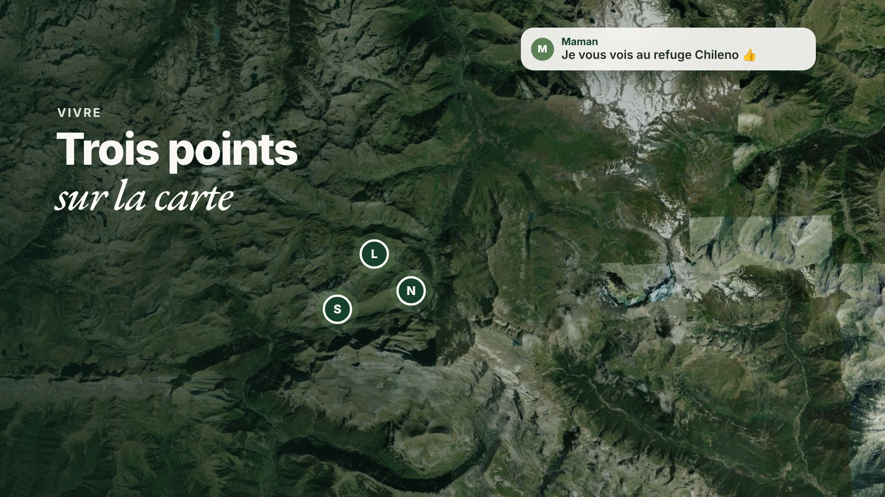
15: L'équipage en direct capture à faire
30 à 31,88 s
Les trois marcheurs avancent en direct sur la trace ; la famille suit le lien de suivi.
À lire les trois points (0,2-1,0 s) ; message de Maman (1,0-1,8 s)
Son son de message
Source partage de position en direct, `/live/[token]`, « Équipage » ; ❌ capture à faire
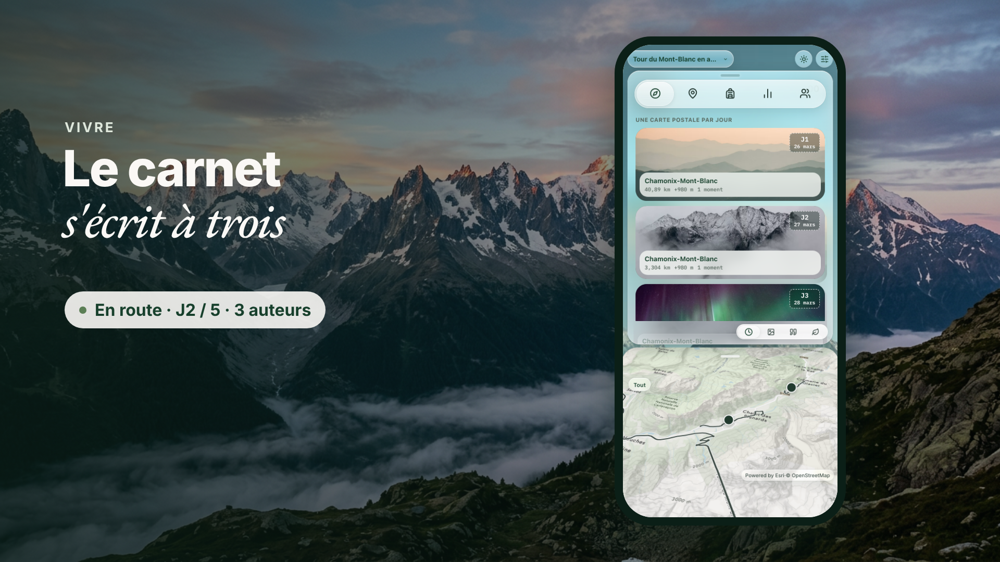
16: Le carnet s'écrit réel
31,88 à 33,75 s
Chacun poste ses moments dans le même carnet : photo, altitude, rencontre.
À lire « En route · J2 / 5 » (0,2-1,8 s)
Son pop par moment
Source carnet « Fil de bord » 📷 (`prod3`)
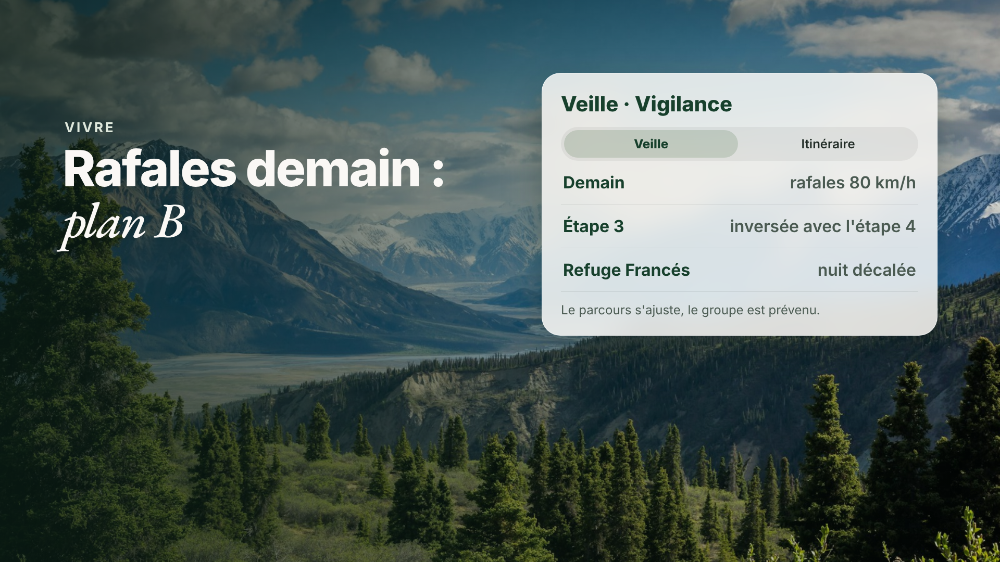
17: Le plan B partiel
33,75 à 35,62 s
La veille signale des rafales ; l'itinéraire est réordonné et le groupe prévenu.
À lire « plan B » (0,2-1,0 s) ; l'étape inversée (1,0-1,8 s)
Son souffle ; clic
Source « Veille », éditeur de parcours ; enchaînement automatique = partiel
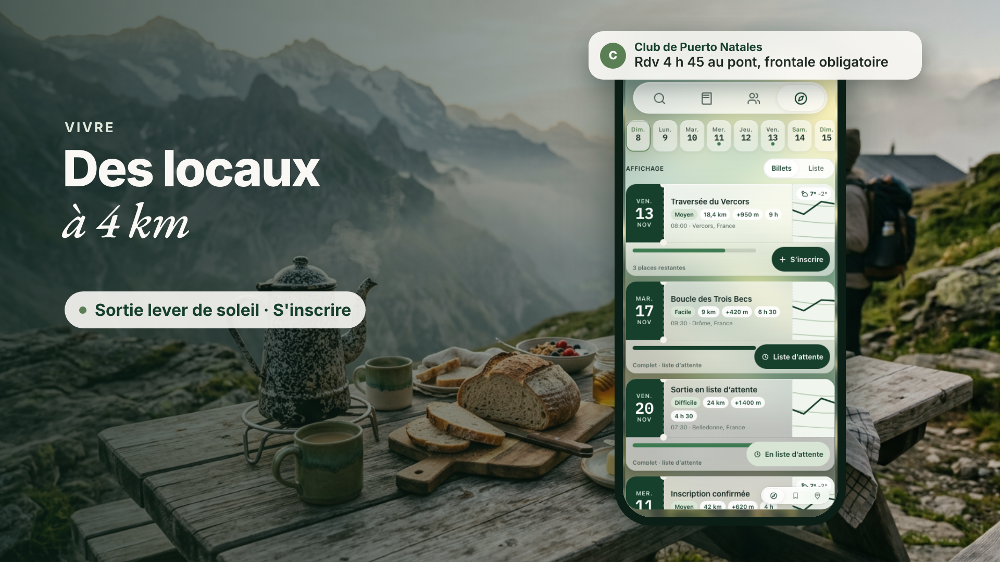
18: Le club du coin partiel
35,62 à 37,5 s
Léa poste dans un club local ; une sortie « lever de soleil » est programmée avec des voyageurs autour ; le groupe s'inscrit.
À lire « à 4 km » (0,2-1,0 s) ; « S'inscrire » (1,0-1,8 s)
Son clic ; son de message
Source clubs et sorties 📷 ; proposition selon la position d'un groupe en voyage = vision ; club fictif
19: Le lever de soleil réel
37,5 à 41,25 s
Neuf silhouettes au lever du soleil : le moment arrive dans le carnet avec les six nouveaux compagnons.
À lire la photo (0,0-1,6 s) ; « + 6 voyageurs » (1,6-3,6 s)
Son la musique respire : second temps fort
Source photo de marque (à remplacer par une photo libre des Torres) ; données fictives
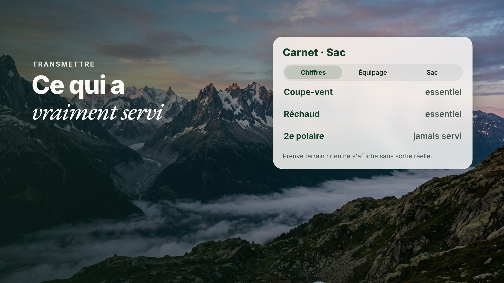
20: Le retour capture à faire
41,25 à 43,12 s
Le carnet se termine ; chaque objet reçoit son verdict de terrain.
À lire « essentiel » / « jamais servi » (0,2-1,8 s)
Son pop par verdict
Source carnet « Sac · verdicts » 📷 (`prod3/10-sac-verdicts.png`) ; preuve terrain `kit_field_reports`
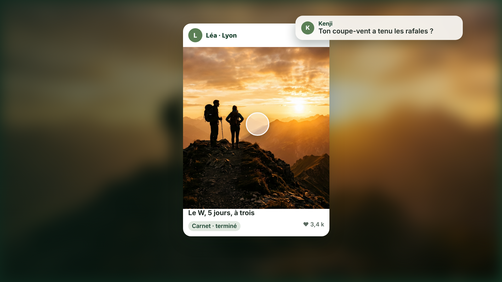
21: Kenji, à Osaka réel
43,12 à 45 s
À l'autre bout du monde, Kenji tombe sur le carnet de Léa et lui écrit.
À lire le carnet (0,2-1,0 s) ; message de Kenji (1,0-1,8 s)
Son son de message
Source post communauté ; personnes fictives
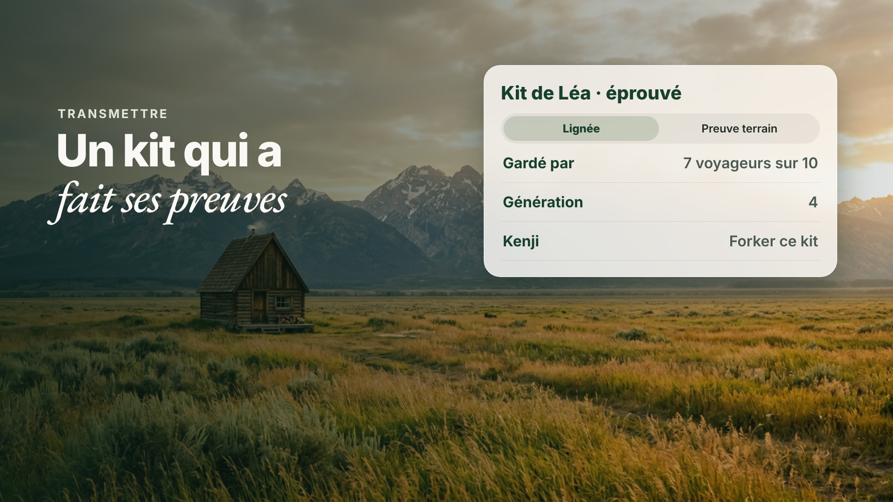
22: La lignée capture à faire
45 à 46,88 s
Le kit de Léa descend de celui de Maya ; Kenji le forke à son tour.
À lire « gardé par 7 voyageurs sur 10 » (0,2-1,2 s) ; « Forker » (1,2-1,8 s)
Son pop
Source lignées de kits (vocabulaire CLAUDE.md) ; ❌ capture à faire ; chiffres illustratifs
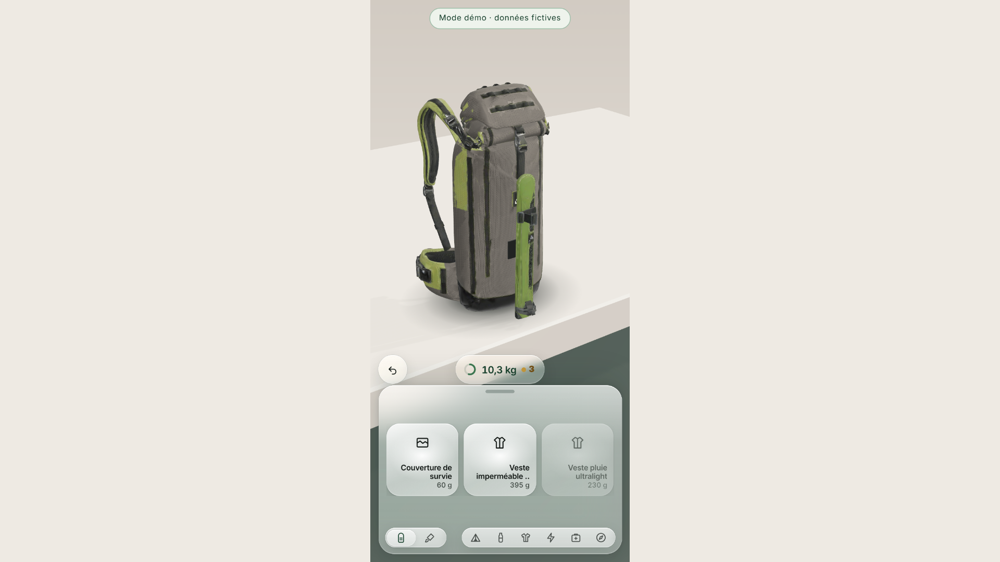
23: Sa version réel
46,88 à 48,75 s
Dans le Kit Studio, Kenji adapte le sac : coloris « Nuit », un module en plus, sa version.
À lire le sac éclaté (0,2-1,8 s)
Son clic
Source Kit Studio 📷 (`walkthrough-13-exploded.png`)
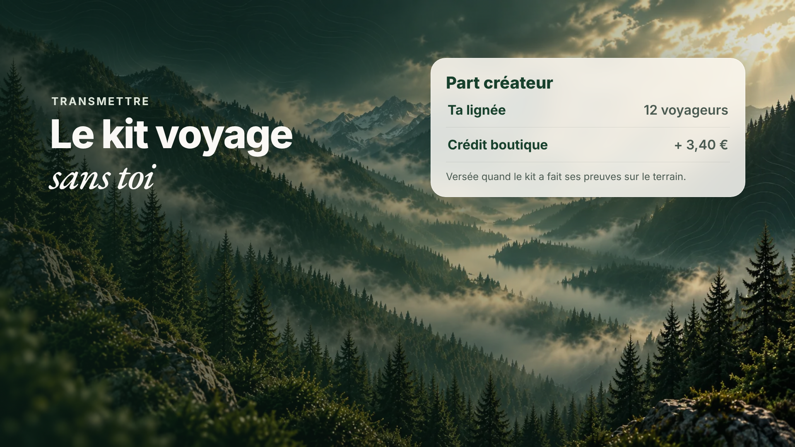
24: La part créateur vision
48,75 à 50,62 s
Léa reçoit une notification : son kit a été repris, une part créateur lui revient en crédit boutique.
À lire « + 3,40 € » (0,6-1,8 s)
Son son de notification
Source part créateur (« bientôt disponible » dans l'app) = vision ; montant fictif
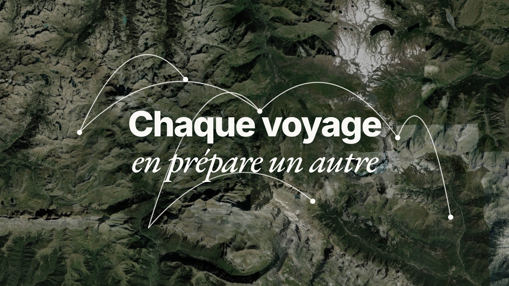
25: Chaque voyage en prépare un autre vision
50,62 à 54,38 s
Le globe s'éloigne : des arcs relient carnets, kits et clubs d'un continent à l'autre, l'empreinte de Léa s'ajoute.
À lire « Chaque voyage » (0,4-1,6 s) ; « en prépare un autre » (1,6-3,6 s)
Son montée
Source vue imaginée (agrégée, sans coordonnées) = vision

26: LKDV réel
54,38 à 60 s
Le badge arrive comme une boussole qui se cale ; « Le Kit du Voyageur » ; « Préparer · Explorer · Partager » ; web, iOS, Android.
À lire le badge (0-1,0 s) ; le nom (1,0-2,5 s) ; l'adresse (2,5-5,6 s)
Son impact sous le badge ; fondu 1,5 s
Source `public/logo.png` ; adresse à confirmer